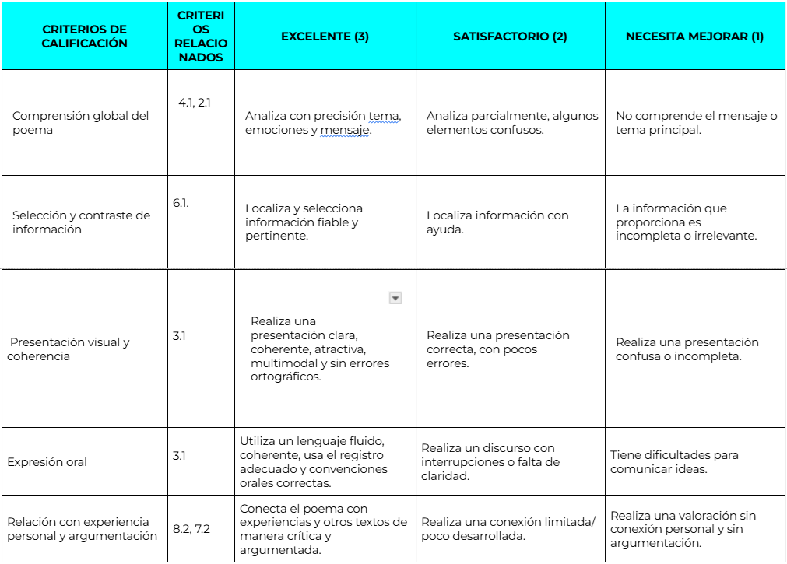

¿Con qué se evalúa?
1. Rúbrica de desempeño
A continuación vamos a crear una rúbrica de desempeño con el objetivo de evaluar los criterios del proyecto, entre los que destacan la comprensión lectora, la categorización de los poemas, la creación de un texto multimodal (Canva) y la expresión oral. Para ello, evaluaremos las siguientes tareas:
- Lectura y comprensión del poema (individual, sesión 1)
- Creación de presentación visual del poema (individual, sesión 1)
- Recitado de poemas (individual, sesión 2)

Aplicación
Se aplicará la rúbrica durante las sesiones de creación y recitado.
Se registrarán puntuaciones y observaciones.
Se entregará copia de la rúbrica al alumnado antes de cada actividad para fomentar la autoevaluación y claridad de expectativas (además, realizarán una actividad de autoevaluación)
Variables/Diversidad
Puesto que se trata de un grupo heterogéneo y de gran diversidad, se adaptará el contenido al alumnado con dificultades de comprensión o pocas habilidades digitales.
Los datos se digitalizarán y analizarán en Additio, que es la herramienta que suelo usar, para valorar el desempeño individual y grupal.
2. Formulario de autoevaluación
Hemos creado un formulario de autoevaluación para recoger la percepción del alumnado sobre su propio aprendizaje y el de sus compañeros con el objetivo de que realicen una reflexión crítica.
Con este instrumento, valoraremos las siguientes tareas:
- Reflexión sobre lectura y análisis de poemas (sesión 1)
- Evaluación del trabajo en equipo y recitado (sesión 2)
Enlace:
Cuestionario de autoevaluación/coevaluación
Aplicación
- Se aplicará al finalizar la situación de aprendizaje.
- Se ha realizado con Google Forms.
- Se analizarán los resultados reforzar retroalimentación individual y grupal y para detectar dificultades de comprensión o de habilidades digitales.
Variables/Diversidad
- Se comprobará que exista coherencia entre la autoevaluación, coevaluación y la rúbrica para identificar posibles sesgos.
- Se anotará la información relevante en Additio en relación con el desempeño que ha percibido el alumno y el real.